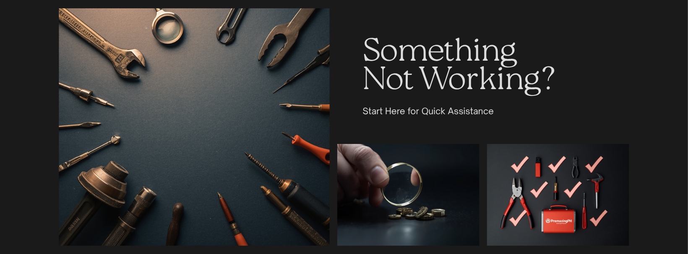

Pick the symptom that matches your problem. We'll send you to the right guide.
Most common cause: missing files or save mismatch. Sometimes sigpatches.
→ Go to Fix Games That Won't Load
5GHz won't connect, internet drops, or "can't reach Nintendo servers" (the last one is intentional in JV mode).
→ Go to Fix WiFi and Network Issues
Hardware reader fault, damaged connector, fake SD, or compatibility issue.
→ Go to Fix SD Card Problems
Three-level fix progression — start at Level 1, escalate only if needed.
→ Go to Fix Joy-Cons That Won't Pair
Could be software corruption, emuMMC issue, or modchip problem.
→ Go to Other Errors and Hardware Issues
Quick answers to the most common customer questions.
→ Go to Frequently Asked Questions
What CFW, OFW, EmuMMC, sigpatches, NSP, etc. actually mean.
→ Go to Switch Terms & Definitions
Message us directly. Include: what mode you're in (JV/Legit), what you were doing when it happened, what you've already tried, and photos if relevant.
Most issues are fixable. A few aren't (drowned consoles, fully bricked modchips, etc.) — and we'll always tell you straight up if that's the case. We'd rather give you a real answer than waste your time.